儲存設定
重新讀取
還原預設值
一般設定
Google Maps API Key
申請說明
用來使用 Google 的地理編碼服務（座標轉地址）和 Google Maps API，設定後每日可使用 2500 次地理編碼與 25000 次讀取地圖
×
Google Maps API Key 申請說明
前往
Google APIs
若第一次使用，需同意遵守服務條款，並把彈出的新手教學按一按
在左邊 API 管理員選單中選擇「憑證」
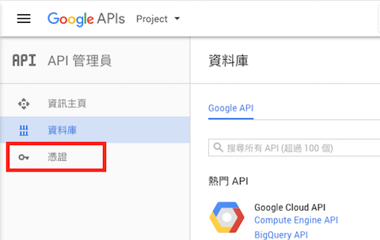
若從未建立過專案會直接跳出視窗請按下「建立專案」。若已有專案可使用上方專案選單來建立專案或直接「建立憑證」
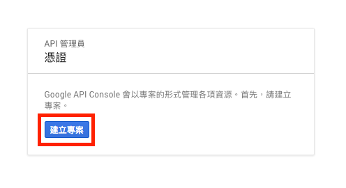
填入你想要的專案名稱、選擇是否接收電子郵件、是否同意條款，完成後按下「建立」
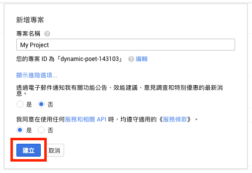
等他轉完圈圈，出現 API 憑證視窗，按下「建立憑證」下拉選單，選擇「API 金鑰」
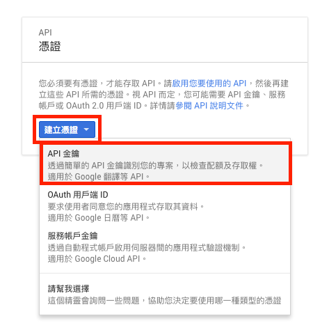
待彈出「已建立 API 金鑰」視窗後，將您的 API 金鑰複製起來，貼到本欄位中
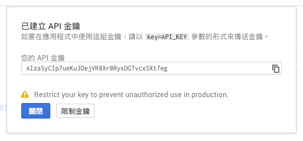
Telegram Bot Token
申請說明
在 Telegram 中找
@BotFather
建立機器人並取得 Bot Token，讓程式能使用擁有該 Token 的 Telegram Bot 傳送訊息
×
Telegram Bot 建立說明
在 Telegram 中搜尋
@BotFather
，點他一下即可開啟對話
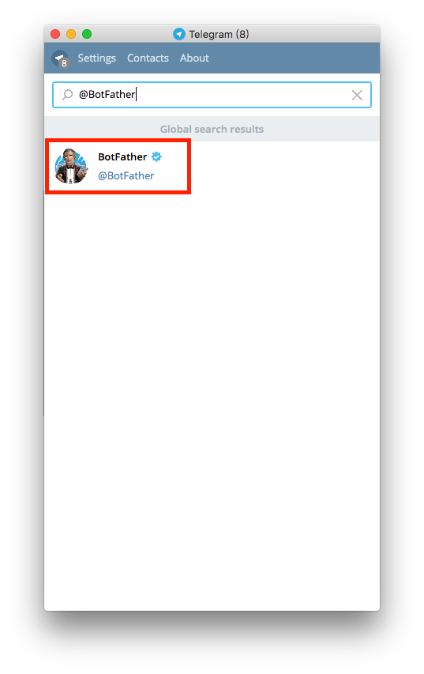
按下底部的 Start
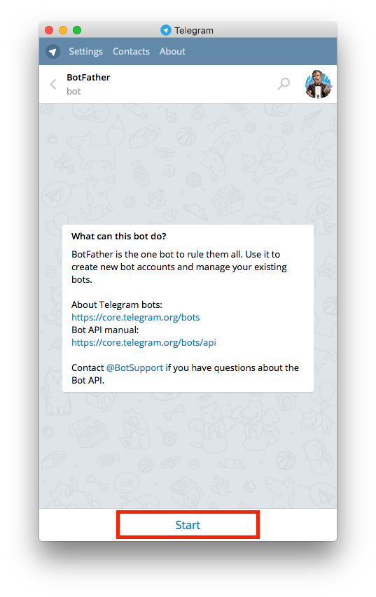
BotFather 會自動顯示說明，按下說明中的 /newbot，或直接輸入 /newbot 傳送訊息
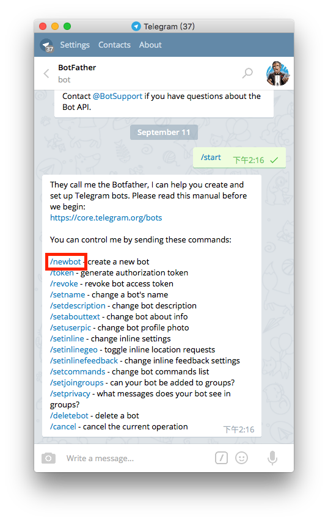
BotFather 會說 Alright, a new bot. How are we going to call it?... 這時輸入機器人名稱並傳送訊息
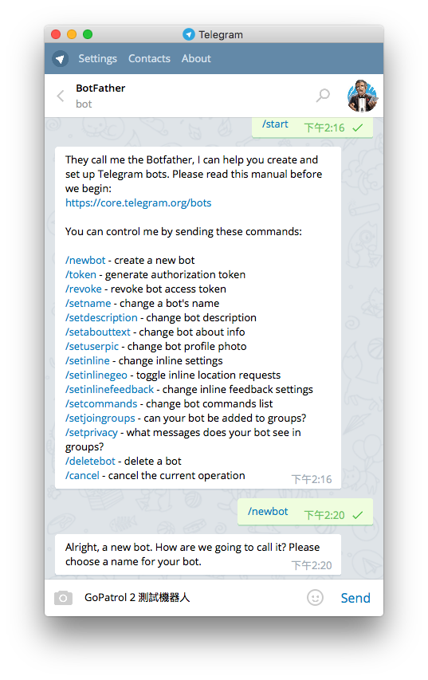
名稱設定好後，BotFather 會說 Good. Now let's choose a username... 這時要輸入機器人的使用者名稱，須為英文、符號僅能使用底線並且以 bot 做結尾，例如 TetrisBot 或 tetris_bot，輸入完後送出訊息
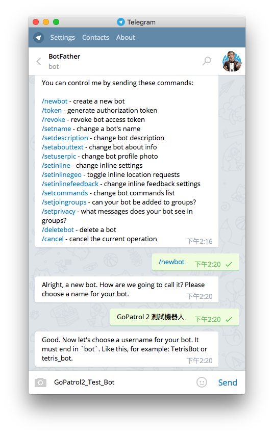
若成功會出現 Done! 開頭的訊息，並且在訊息中可以找到 token，將 token 複製並貼到本欄位中。若未出現 Done! 與 token 表示 Bot 使用者名稱重複或名稱未符合規範需再重新輸入
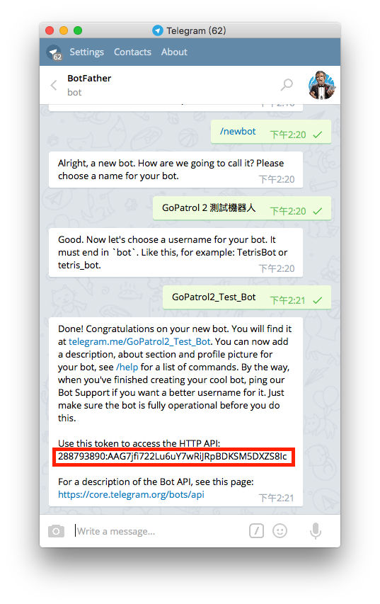
另外別忘了將你的機器人啟動，按下成功訊息中的連結（telegram.me/你的Bot使用者名稱）可開啟與機器人的對話，按下對話底部的 Start 即可啟動
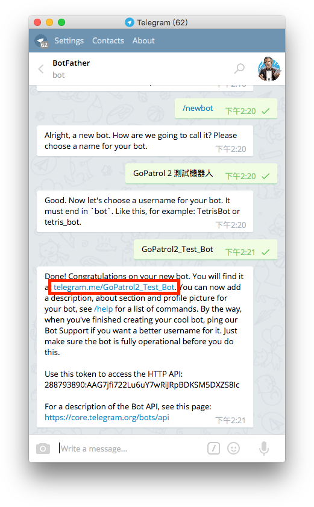 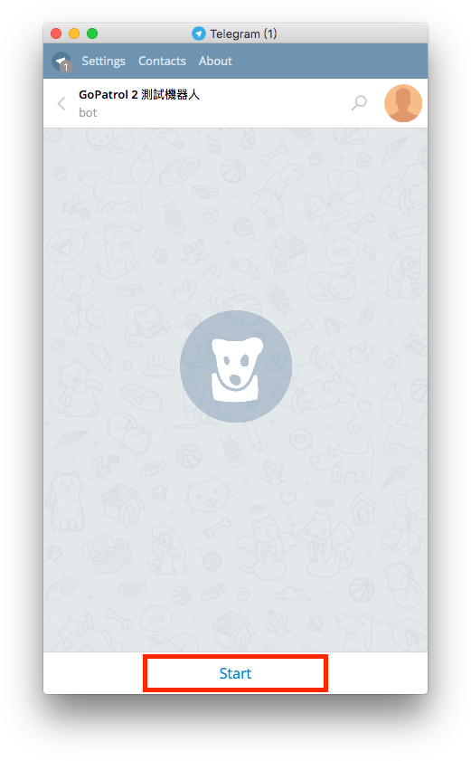
精簡通知
範例
啟動精簡通知時，把 Pokemon 資訊與位置合併為單一訊息（sendVenue）
×
精簡通知範例
精簡通知
一般通知
顯示距離
範例
是否在通知中顯示距離
×
顯示距離範例
顯示距離
不顯示距離
以所在位置計算距離
選擇位置
緯度
經度
若勾選此項目，將用此座標來計算顯示於 Pokemon 通知中的距離，否則將自動使用巡邏中心來計算距離（若無巡邏中心且未設定此項目則不顯示）
×
選擇所在位置
允許接收指令
允許 Telegram 機器人接收聊天指令以控制本程式，例如 /run /stop /getmap...等
管理員 Telegram 使用者名稱
加入
輸入完畢後請按下加入 Enter 或加入。可輸入多個管理員
接收通知的頻道ID
加入
輸入完畢後請按下 Enter 或加入。可輸入多個頻道ID
請求延遲（豪秒）
每次與伺服器請求之間要間格多久（巡邏間格），最少為 5000 豪秒
Pokemon 顯示名稱
有一隻編號 131、藍藍的、背上有殼可以載人游泳的水/冰系 Pokemon，你喜歡怎麼稱呼他？
拉普拉斯（新中譯）
乘龍（舊台譯）
背背龍（舊港譯）
ラプラス（日文）
Lapras（英文）
Pokemon 設定